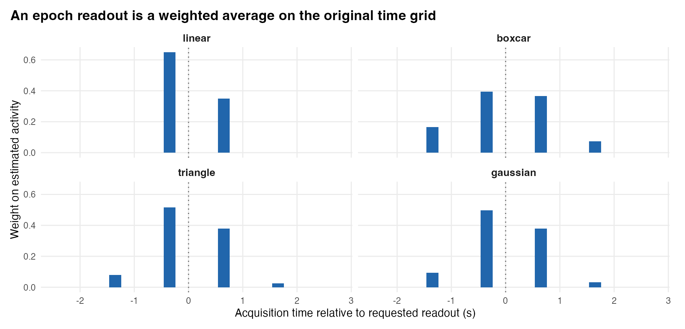
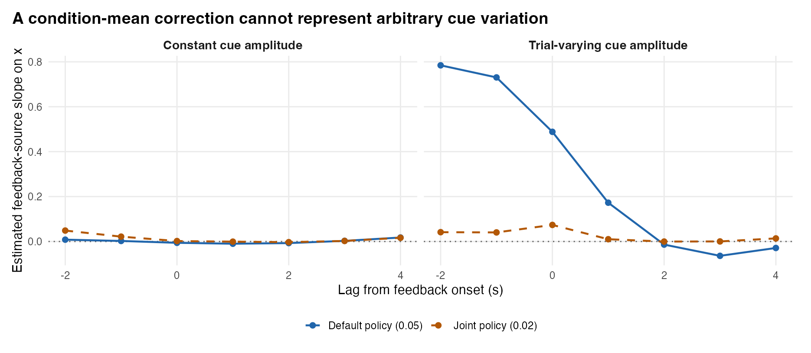
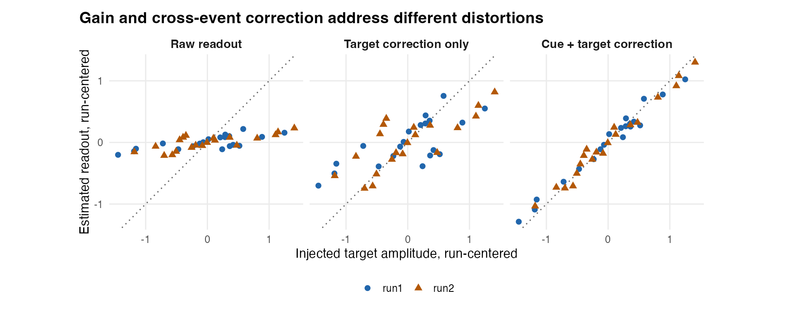
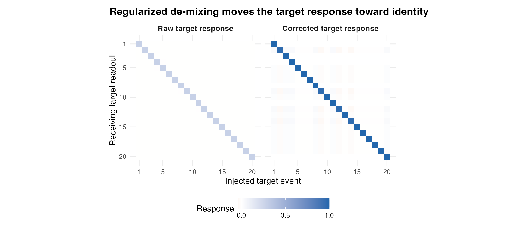
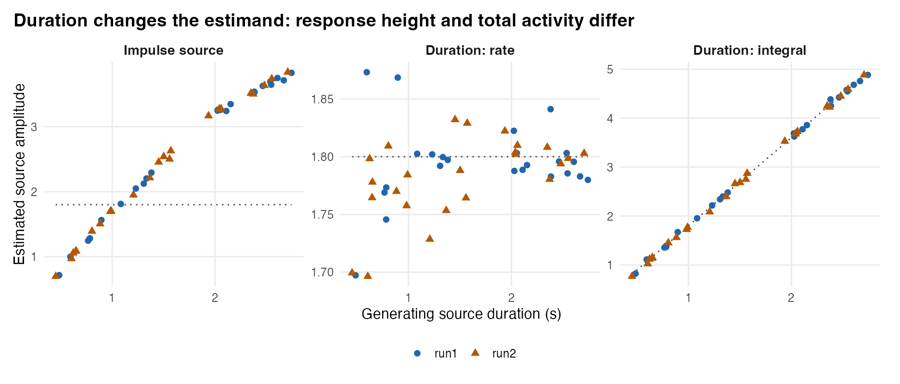
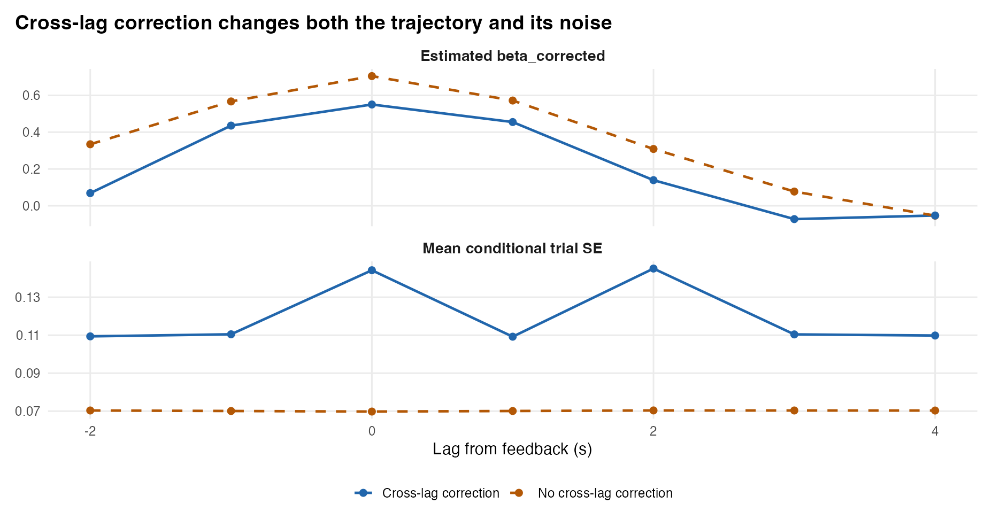
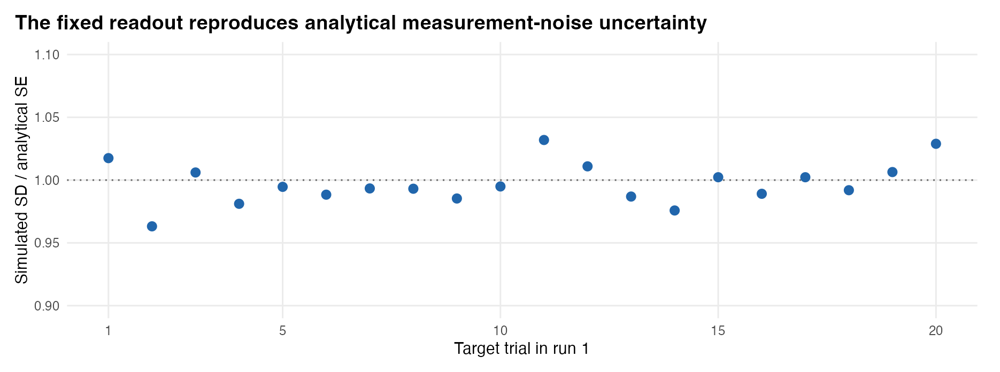
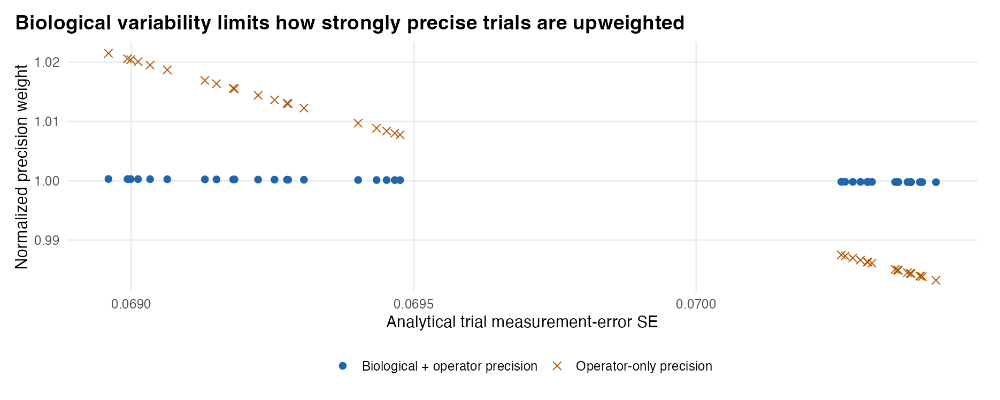
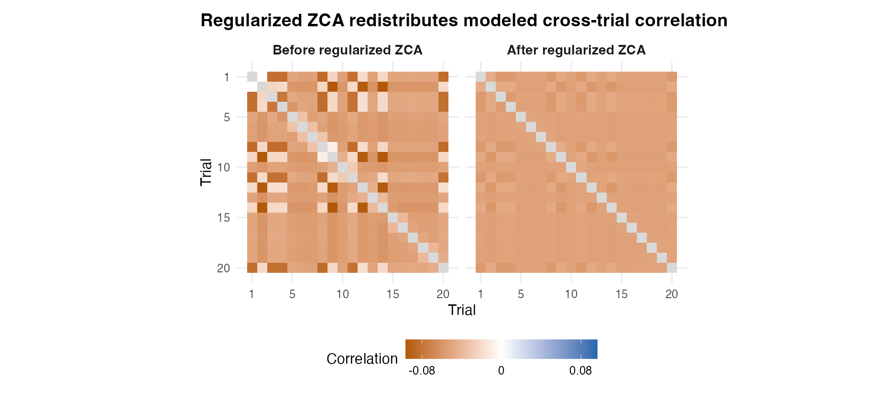

epochs <- decon_epoch_regression(
deconvolution = decon,
covariates = covariates, # or NULL for a covariate-agnostic panel
events = events,
target_condition = "feedback",
lags = seq(-2, 4, by = 1),
source_model = "impulse", # use "duration" + trial_durations for RT intervals
duration_scale = "rate",
readout_kernel = "triangle",
readout_width = 1.5 * tr,
demix_other_events = TRUE,
demix_target_trials = TRUE,
demix_within_trial = FALSE, # FALSE before medusa_multilag_infer(); TRUE for 1-subject curves
demix_ridge = 0.05, # lower to 0.02 if non-target cues vary strongly with covariates
restore_scale = TRUE,
weighting = "gls",
tau2_mode = "auto",
parcel_groups = parcel_ids, # pre-aggregates parcels (Step 4) in one pass
whiten_panel = TRUE,
return_panel = TRUE
)Step 3: Epoch Alignment, De-Mixing, and Uncertainty Propagation
Mapping continuous deconvolved series onto trial-level readouts, durations, and standard errors
5.1 Overview
Deconvolving a BOLD run in Step 2 produces a continuous time series \(\hat{s}_r\) on the acquisition clock—not isolated single-trial numbers. Simply slicing or linearly interpolating \(\hat{s}_r\) around each event onset (the legacy alignment route) leaves two systematic distortions: (1) regularization shrinkage, which attenuates true trial amplitudes (\(g_i < 1\)), and (2) cross-event mixing, where preceding cues, motor responses, or rapid neighboring trials bleed through the regularized inverse operator \(D_r H_r\) into the target readout. Moreover, when an event represents a variable-duration deliberation interval (such as reaction time), a fixed-point readout conflates firing rate with time-on-task.
Step 3 (decon_epoch_regression()) bridges continuous deconvolution and trial-level modeling by passing the forward event schedule through the exact frozen Step 2 inverse operator. For every requested lag \(\tau\) around target_condition, it integrates local continuous activity via symmetric kernel quadrature, subtracts operator-predicted bleed from non-target events (demix_other_events = TRUE), inverts the target-by-target resolution matrix to remove neighbor cross-talk and restore amplitude gain (demix_target_trials = TRUE), aligns centered trial covariates through the matched post-demixing operator (\(M_{\text{post}}\)), and propagates Step 1–2’s \(\text{AR}(p)\) observation-noise covariance through the entire composite linear map \(B_{r,\tau}\) to deliver exact conditional per-trial standard errors (se_demixed), Empirical-Bayes precision weights, and within-run ZCA-whitened variables.
NotePosition in the MEDuSA Pipeline
Step 2 decon object + events + optional covariates / trial_durations \(\longrightarrow\) Step 3 (decon_epoch_regression) \(\longrightarrow\) Within-subject coefficients + event-aligned trial panel (or combined directly with Step 4 parcel aggregation via parcel_groups)
5.2 Goals of Step 3
Step 3 accomplishes five core objectives:
- Read out event-locked lag trajectories without mutating the acquisition clock: Sample continuous activity around each target onset \(t_i + \tau\) using jitter-tolerant quadrature (
readout_kernel) while gating out trial-lags that lack causal unmasked BOLD support (obs_frac_tau < 0.20). - De-mix interfering events and adjacent target trials: Use the stratum resolution operator \(D_r H_r\) to subtract preceding/succeeding non-target event bleed (e.g., cues) and invert target-to-target cross-talk while restoring regularization-attenuated amplitude gain.
- Define duration-explicit neural estimands when intervals vary: Support impulse (
"impulse"), fixed-window ("window"), and RT-matched sustained boxcar ("duration") forward models, distinguishing constant firing rate (duration_scale = "rate", baseline-deconfounded from RT) from integrated neural mass ("integral"). - Keep predictors and responses in matched operator coordinates: Transform centered within-run predictors by the post-demixing resolution operator \(M_{\text{post}}\) so residual ridge shrinkage at short ISIs never biases trial regression slopes.
- Propagate observation-noise covariance analytically to the trial level: Compute conditional per-trial measurement SEs (
se_demixed), lag-1 trial error autocorrelation (error_ac1), Empirical-Bayes trial precision weights, and regularized within-run ZCA whitening matrices without Monte Carlo resampling.
What Step 3 deliberately leaves to Steps 4–6: Step 3 operates within a single participant’s multi-run fit. Combining voxels into parcels is covered in Step 4 (which runs inside the same decon_epoch_regression() call via parcel_groups), population inference across participants is handled in Step 5, and disattenuating noisy seed predictors is handled in Step 6.
5.3 Inputs: What Step 3 Receives and Why
| Input | Structure | Why It Is Set Up That Way |
|---|---|---|
deconvolution |
Full "crossrun_decon" S3 object from deconvolve_crossrun_hrf() |
Never pass a plain activity matrix or saved CSV. Step 3 needs deconvolution$hrf_fit, scaling, settings, noise_innovations, and frame_weights to rebuild the exact stratum inverse operator \(D_r\) and noise covariance \(\Sigma_r\). |
events & target_condition |
Optional run-named list of event data.frames (defaults to hrf_fit’s events); character scalar naming target events |
Keeping all task events (cues, decisions, motor responses, feedback) in events while naming target_condition = "feedback" tells Step 3 which events are targets to read out and which are interfering non-target events whose bleed into target epochs must be subtracted! |
covariates |
NULL (covariate-agnostic panel mode), or numeric matrix/data.frame/run-named list matching target event rows |
Supplying covariates = NULL builds a reusable, covariate-agnostic de-mixed trial panel (tau2_mode = "marginal") ready for multiple downstream mixed_by() formulas or connectivity models. Supplying covariates adds within-person precision-weighted and GLS slope tables (coefficients) and ZCA-whitened predictor columns. |
lags & readout_kernel |
Numeric vector of lag offsets in seconds (e.g., seq(-2, 4, by = 1)); "triangle", "linear", "boxcar", or "gaussian" |
Evaluates event-locked readouts at arbitrary lag offsets without resampling BOLD. Note that in Step 3, evaluating lag \(\tau\) shifts both the readout window and the assumed target forward source to \(t_i + \tau\). |
source_model, trial_durations, duration_scale |
"impulse", "window", or "duration"; optional target duration vector/list (s); "rate" or "integral" |
Explicitly encodes what latent neural shape each trial amplitude multiplies—preventing reaction-time variability from masquerading as amplitude modulation when neural firing rate is constant. |
demix_other_events, demix_target_trials, demix_within_trial |
Logical flags + demix_ridge (0.05) & within_trial_ridge (0.06) |
Separates three distinct sources of blur: non-target event bleed, trial-to-trial target overlap, and within-trial cross-lag spread. |
5.4 Outputs: What Step 3 Produces and Why It Is Set Up That Way
decon_epoch_regression() returns a named list designed to serve both immediate single-subject inspection (coefficients, summary) and lossless multi-subject handoffs (panel + operator summaries):
| Output Component | Structure | Why It Is Set Up That Way |
|---|---|---|
panel |
Tidy data.table keyed by run, trial, event_index, onset, evt_time, and voxel/parcel |
The primary analysis table for Steps 5–6. Includes both trial (1..\(m\) target counter within run) and event_index (exact row index in events[[r]]) so behavioral joins never misalign when non-target events are interleaved. Carries decon_raw, decon_demixed, se_raw, se_demixed, precision_weight, precision_weight_cohort, error_ac1, tau2_bio, reliability_trial, decon_eb, and optional *_whitened columns. |
coefficients & summary |
Per-unit × lag × term data.frame (beta_raw, beta_corrected, beta_unweighted, beta_weighted, beta_gls, sandwich SEs, \(t\), \(p\)); lag-averaged summary |
Reporting beta_raw alongside beta_unweighted, beta_weighted, and beta_gls under the same Step 2 inverse makes it immediately transparent how much of an effect comes from operator de-mixing versus trial precision weighting or ZCA decorrelation. |
lag_resolution & lag_error_cor |
Per-unit \(L \times L\) symmetric cross-lag point-spread (\(C_{\text{sym}}\)) and trial error correlation matrices | Stored on the fit object so medusa_multilag_infer() (Step 5) can perform group-level spectral deblurring, correlated-SURE P-spline smoothing, and simultaneous Max-\(|T|\)/TFCE inference across lags without re-running Step 3. |
unit_error_cor & parcel_weights |
Empirical-Bayes shrunk unit-by-unit error correlation matrix; normalized voxel weight vectors (when aggregate_by_parcel = TRUE) |
Preserves cross-region observation-noise correlation for decon_connectivity_repair(..., shared_error = "auto") (also embedded per row as shared_noise_loading in panel so it survives rbindlist() and CSV export). |
5.5 Recommended Settings
| Argument | Recommended | Package Default | Why Recommended & When to Adjust |
|---|---|---|---|
restore_scale |
TRUE |
FALSE |
Critical override for multi-run/group studies: Step 2 divides each run by its own noise_sd. Setting restore_scale = TRUE multiplies activity back by scaling[[r]]$scale so all runs within a participant share physical BOLD units (under Step 1’s HRF normalization) while keeping exact se_demixed and precision_weight_cohort scaling! |
whiten_panel & return_panel |
TRUE & TRUE |
FALSE (return_panel = TRUE when covariates = NULL) |
Exports decon_demixed_whitened and <var>_whitened alongside precision_weight_cohort, allowing mixed_by() in Step 5 to account for both heteroskedastic trial precision and within-run serial trial error correlations. |
demix_other_events & demix_ridge |
TRUE, 0.05 (0.02 for trial-varying confounds) |
TRUE, 0.05 |
At demix_ridge >= 0.03, non-target subtraction uses a low-variance condition-mean operator—ideal when cues have roughly constant amplitude. If an upstream cue varies trial-by-trial with the same behavioral predictor as your target event, lower demix_ridge to 0.02 to activate joint 2nd-order Tikhonov (T, O) de-mixing! |
demix_within_trial |
FALSE for Step 5 trajectory pooling; TRUE for descriptive curves |
FALSE |
Leave FALSE when passing results to medusa_multilag_infer(), which performs spectral de-blurring at the group level where SNR is \(\sqrt{N}\) higher. Enable TRUE (with lags spaced at \(\approx 1\times\text{TR}\)) when inspecting single-subject lag waveforms. |
source_model & duration_scale |
"impulse" for brief events; "duration" + "rate" for RT epochs |
"impulse", "rate" |
Match the source model to the cognitive process: "duration" with duration_scale = "rate" centers the readout over [onset + lag, onset + lag + RT] and de-confounds constant baseline firing rates from trial duration. |
5.6 Step 3 Mechanisms Illustrated
5.6.1 1. Kernel Quadrature Readouts and Causal BOLD Support Gating
At each target onset \(t_i\) and lag \(\tau\), build_epoch_readout_matrix() constructs a row-normalized weight vector \(S_\tau[i, :]\) over the discrete acquisition grid (Figure 5.1). "linear" uses 2-point bracket interpolation, whereas "triangle" (default, width \(1.5 \times \text{TR}\)), "boxcar", and "gaussian" integrate 9-point symmetric quadrature nodes across adjacent TRs—attenuating high-frequency deconvolution noise while honoring exact sub-TR event jitter.
Crucially, MEDuSA checks causal BOLD observability (obs_frac_tau >= 0.20): if at least 80% of the forward HRF energy evoked by a source at \(t_i + \tau\) falls inside censored frames (valid_rows == FALSE) or past the end of the run, decon_epoch_regression() marks that trial-lag NA rather than fabricating a number from smoothness prior extrapolation!

20.35 s, TR = 1 s) for "linear", "boxcar", "triangle", and "gaussian" kernels.
5.6.2 2. Non-Target Subtraction (demix_other_events) & Target De-Mixing (demix_target_trials)
Consider a cue–feedback paradigm (Cue followed 1–3 s later by Feedback) with three simulated voxels (simulate_step3.R): Cue_only (responds to cues with zero feedback effect), Target (true feedback slope 0.70 on x), and Noisy_target (true slope 0.70, higher noise). Because RT links cue-to-feedback delay with x, uncorrected feedback readouts in Cue_only pick up spurious cue bleed (beta_raw = -0.115), while Target is severely attenuated (beta_raw = 0.088 vs. truth 0.700; Table 5.1, Figure 5.3).
- Target de-mixing alone (
target_only) restores gain on target overlap (0.307) but magnifies unsubtracted cue bleed inCue_only(-0.401). - Cue + target de-mixing (
default,demix_ridge = 0.05) removes constant-amplitude cue bleed (Cue_onlyslope-0.006) and recovers the true0.70slope cleanly (Target=0.705,Noisy_target=0.673), sharpening the 20×20 target resolution matrix toward the identity (Figure 5.4). - What if cues themselves vary trial-by-trial with
x(stress_bold)? Under strong cue modulation (1.8 + 0.9 x), condition-mean subtraction (demix_ridge = 0.05) leaves residual cue variation (Cue_only=0.488), whereas loweringdemix_ridge = 0.02activates joint 2nd-order Tikhonov(T, O)de-mixing—cuttingCue_onlybleed to0.074(Target=0.773) at the expected cost of ~45% larger trial SEs (0.101vs.0.070; Figure 5.2).

Cue_only voxel under constant cue amplitude (left) versus trial-varying cue amplitude correlated with x (right), comparing default condition-mean de-mixing (0.05) against joint trial-level de-mixing (0.02).

Target across raw readout, target-only de-mixing, and full cue + target de-mixing.

Raw target response) and after (Corrected target response) Step 3 regularized de-mixing.
Show supporting code
knitr::kable(pol, digits = 3, row.names = FALSE,
col.names = c("Voxel", "Raw Slope", "Corrected Slope", "Mean Trial SE", "Policy"))policy_metrics.csv).
| Voxel | Raw Slope | Corrected Slope | Mean Trial SE | Policy |
|---|---|---|---|---|
| Cue_only | -0.115 | -0.115 | 0.020 | raw |
| Target | 0.088 | 0.088 | 0.020 | raw |
| Noisy_target | 0.083 | 0.083 | 0.054 | raw |
| Cue_only | -0.115 | -0.401 | 0.070 | target_only |
| Target | 0.088 | 0.307 | 0.070 | target_only |
| Noisy_target | 0.083 | 0.290 | 0.188 | target_only |
| Cue_only | -0.115 | -0.006 | 0.070 | default |
| Target | 0.088 | 0.705 | 0.070 | default |
| Noisy_target | 0.083 | 0.673 | 0.186 | default |
| Cue_only | -0.115 | 0.002 | 0.101 | joint |
| Target | 0.088 | 0.701 | 0.101 | joint |
| Noisy_target | 0.083 | 0.651 | 0.270 | joint |
| Cue_only | 0.006 | 0.488 | 0.070 | stress_default |
| Target | 0.209 | 1.199 | 0.070 | stress_default |
| Noisy_target | 0.204 | 1.168 | 0.186 | stress_default |
| Cue_only | 0.006 | 0.074 | 0.101 | stress_joint |
| Target | 0.209 | 0.773 | 0.101 | stress_joint |
| Noisy_target | 0.204 | 0.722 | 0.270 | stress_joint |
5.6.3 3. Variable-Duration Epochs: Rate vs. Time-Integrated Activity
When neural activity is sustained at a constant firing rate (1.8 units/s) across variable decision durations (0.4–2.8 s), total evoked BOLD scales roughly linearly with duration. How Step 3 parameterizes source_model determines what scientific question is answered (Figure 5.5):
source_model = "impulse"misinterprets longer-duration BOLD accumulation as larger impulse height, creating a strong artificial positive slope against RT (beta = 1.392).source_model = "duration", duration_scale = "rate"matches both the forward boxcar and midpoint readout window to each trial’s duration and uses a centered-subspace penalty plus Sherman–Morrison rank-1 baseline adjustment so constant firing rate remains invariant to RT (beta = 0.015, near true0.00!).source_model = "duration", duration_scale = "integral"normalizes each forward boxcar to unit area, explicitly estimating time-integrated neural mass (1.8 × duration, recovering slope1.806vs. true1.800).

5.6.4 4. Optional Cross-Lag De-Mixing, Exact Analytical SEs, Precision Weights, and ZCA
Enabling demix_within_trial = TRUE applies a symmetric 2nd-order Tikhonov inverse across lags, sharpening single-subject lag specificity while increasing conditional lag SEs (Figure 5.6). Across all configurations, MEDuSA’s \(O(m_{\text{obs}} p M)\) AR operator factor compute_ar1_operator_factor() reproduces dense matrix covariance \(B \Sigma B^\top\) to 6.07e-18 and matches 2,500-draw Monte Carlo noise SDs trial by trial (Figure 5.7).
Finally, Step 3 combines per-trial measurement variance \(s_{ri}^2 = \text{se\_demixed}_{ri}^2\) with an Empirical-Bayes biological trial variance estimate \(\hat{\tau}_{\text{bio}}^2\) so precision_weight (\(w_{ri} \propto (\hat{\tau}_{\text{eff}}^2 + s_{ri}^2)^{-1}\)) downweights noisy edge/overlap trials smoothly without letting a single low-SE trial dominate when genuine biological trial variability is large (Figure 5.8), while regularized ZCA (whiten_panel = TRUE) suppresses off-diagonal within-run trial error correlations (Figure 5.9).

demix_within_trial = TRUE on estimated lag slopes (top) and conditional per-trial measurement SE (bottom).

se_demixed across all 20 target trials in Run 1.

precision_weight_op) versus biological-variance-stabilized Empirical-Bayes weights (precision_weight).

whiten_panel = TRUE).
Mathematical Reference: Composite Epoch Operator & Covariate Matching
For run \(r\), lag \(\tau\), valid observation rows \(I_r\), and frozen Step 2 inverse \(D_r \in \mathbb{R}^{n_r \times m_r}\):
- Non-target subtraction: Let \(S_{r,0}\) read out all events at lag 0 and \(G_{r,0}\) be their column-centered forward HRF design.
build_other_demix_operator()forms \(L_{\text{other}}\) (condition-mean least squares fordemix_ridge >= 0.03, or 2nd-order iterated Tikhonov joint inversion for< 0.03), yielding cleaned target readout rows \(S_{\text{clean},\tau} = S_\tau - (S_\tau D_r G_{r,0,\text{other}}) L_{\text{other}}\). - Target cross-talk & duration baseline invariance: Given uncentered and column-centered target forward designs \((G_{\tau,\text{unc}}, G_\tau)\),
solve_duration_demix_operator()row-normalizes \(R_{\text{unc}} = \operatorname{diag}(g_{\text{safe}})^{-1} S_\tau D_r G_{\tau,\text{unc}}\), solves \((R_{\text{unc}}^\top R_{\text{unc}} + \lambda_{\text{demix}} Q_m + 10^{-8} I) W_{\text{unc}} = R_{\text{unc}}^\top \operatorname{diag}(g_{\text{safe}})^{-1}\) (penalizing only centered fluctuations \(Q_m = I_m - \frac{1}{m}\mathbf{1}\mathbf{1}^\top\)), applies a Sherman–Morrison rank-1 centering update to obtain \(W_\tau\), and restores centered diagonal gain \(\tilde{G}_\tau\). - Exact noise propagation & \(M_{\text{post}}\) alignment: The complete linear map from centered run BOLD to de-mixed target trials is \(B_{r,\tau} = \tilde{G}_\tau W_\tau S_{\text{clean},\tau} D_r\), with calibrated centered trial error covariance \(\Omega_{r,\tau} = \frac{\sigma_{\text{eff}}^2}{1 - 1/m} Q_m B_{r,\tau} C_{\text{obs}} \Sigma_{\text{AR}}[I_r, I_r] C_{\text{obs}}^\top B_{r,\tau}^\top Q_m\). Centered covariates \(X_{r,c}\) are multiplied by \(M_{\text{post}} = Q_m (\tilde{G}_\tau W_\tau S_{\text{clean},\tau} D_r G_\tau) Q_m\) prior to regression and ZCA whitening so predictor and response undergo identical off-diagonal target shrinkage.
Step 3 simulation script · Figure script · Verification output